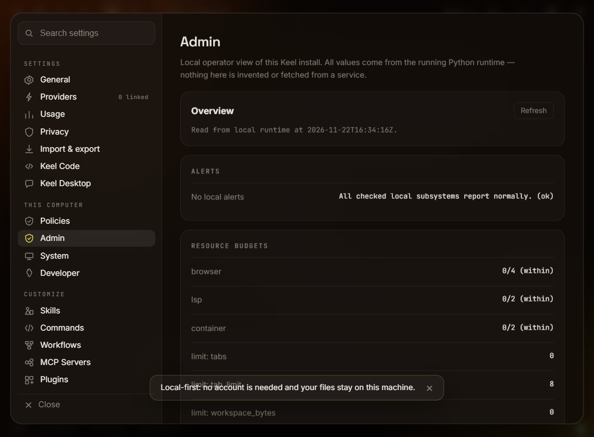
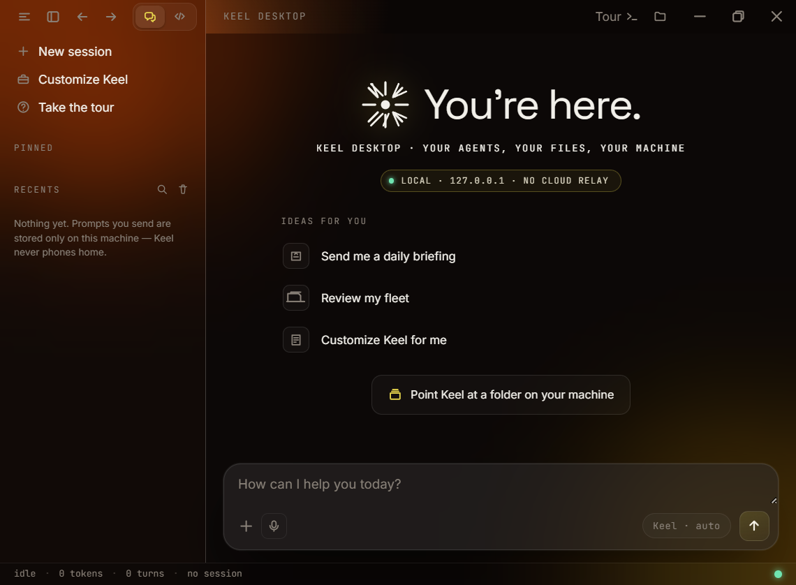
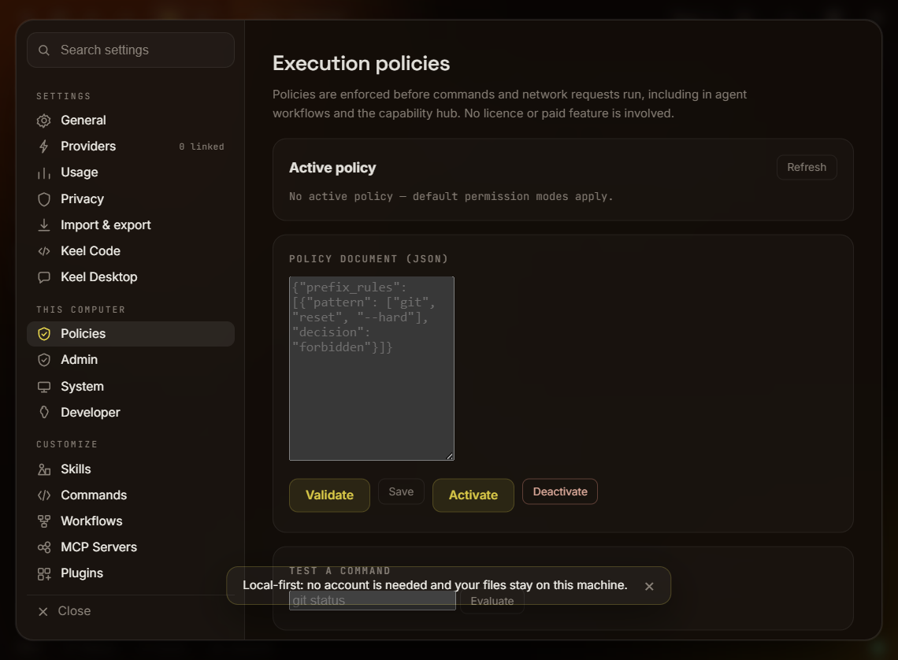
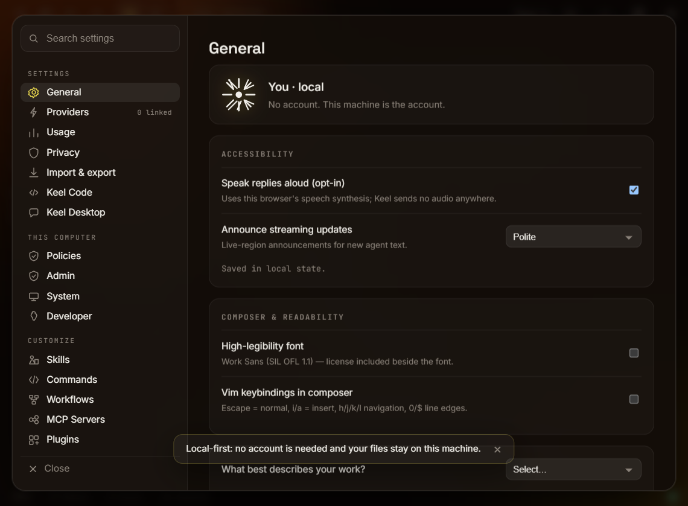

Keel — actual application screenshots
Generated from actual local application captures. No stock images.

admin-screenshot.png · 1140x838 · local E2E capture
main-workspace-screenshot.png · 1140x838 · local E2E capture
policies-screenshot.png · 1140x838 · local E2E capture
settings-accessibility-screenshot.png · 1140x838 · local E2E capture